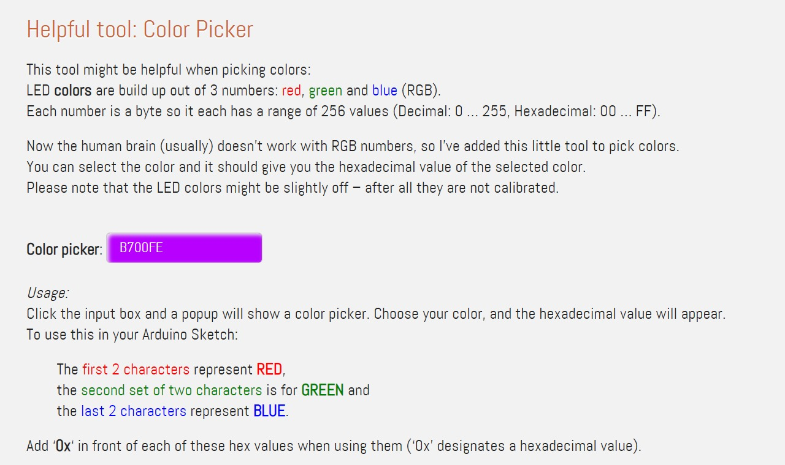

Introduction to my Final Project
Welcome to my Final Project page, where I will be documenting the process. For our Final Project, we have to Design, Fabricate, Intergrate and lastly Present our project. The Project Requirements are as follows:
Design:
- Design of all digitally fabricated parts
- Initial ideas (sketches, drawings)
- Digital design using CAD design using Fusion 360
- Raw files (.svg, .jpg. .png, .dxf) and .f3d files
Fabricate:
- 2D component (Laser cutting, vinyl cutting) - (housings, face plates, fixtures)
- 3D component using 3D printing (irregular structures, containers)
Integrate:
- Smart controller using a microcontroller - Arduino Uno (test) -> Nano (final)
- Input sensor (s) to read-in data
- Output actuators or displays
- Write the control program
- Power the system (but cannnot use USB, 5V input socket)
Present:
- Create a SINGLE .png slide (1920x1080) showing our final product (consisting of Project title, Your name, student id, class, EP1000, Features, Construction details)
- Create a 1-minute video on how your project works and upload to Youtube/ Github
- 5-minute presentation to describe your project
The Process
Firstly, I had a rough idea of what I wanna do:
Initial idea: (sketch)
I wanted to make a motion sensing key holder, when everyone is at home with their keys slot in, it will light up beautifully. Each time a family member comes home, a "Welcome Home" sign will also light up. This holder can add as a nice decoration near the door area, and will also encourage people to come home. There would be like a weight detector/ magnet to close the circuit, and trigger the output. However I feel i should not be too ambitious at the start as this is my first project integrating so many elements. Furthermore, there was also no existing codes I could refer to online.
Final idea: (sketch)
After the inclass lessons, i felt that design and making a 3D illusion mood lamp fitted with motion sensors was not a bad idea too, and consulted Mr Rodney of my idea. He then gave me reccomendations on how to proceed. One concern was the PIR sensor as it is quite weird protruding out, as well as getting the code to work. I then decided to replace it with a touch switch instead as it has the same fuctions too - changing the moods of the lamp.
Give your project a title
Describe what your project does
List the features that you wish to develop
List the digital fabrication techniques you will use
Write up a Bill-of-materials
EP1000 Digital Fabrication Fundamentals
Module Project
Group: 1
Adm No: P2027863
Name: Chou Wei Zhi
Project Title: Dragon Mood Lamp
What does it do?
It serves as a night light / a simple decoration on your study table.
It lights up when the user touches the touch switch, it cycles through the 7 colours of the rainbow,
and there is an automatic rainbow cycler at the end.
What are its features?
The plexiglass/ clear acrylic gives it an illusion that the object that lights up on the surface is in 3D
a simple touch switch allows user to change moods according to how they are feeling.
Integration
| Techniques |
Description |
| CAD Design, Graphics |
Graphics and design on the acrylic face, case to house the Nano, parametric wooden box |
| Laser cutting |
Clear acrylic, parametric wooden box, supports for the acrylic |
| 3D Printing |
Nano case, touch switch case |
| Micro-controller |
Arduino UNO/ Nano compatible |
| Input devices |
Touch switch |
| Output devices |
6 units WS2812 RGB Neo Pixels Strip |
Bill of Materials
| Qty |
Item Description |
Approx. Cost |
| 1 |
Arduino Nano with USB cable |
$3 |
| 1 |
Clear Acrylic for Graphics of the Lamp |
Fablab |
| 6 pcs |
WS2812 RGB Neo Pixels Strip |
$1.20 |
| 1 |
Touch switch |
$0.10 |
| 1 |
5V DC Female Power Jack |
$5 |
| 1 |
Mini Breadboard |
$0.30 |
| 10-15 |
Multi-core flexible wires |
$0.20 |
Then, I went to look up designs on Pinterest, and decided on this dragon.
Dragons in Chinese culture symbolize great power, good luck and strength, as well as a rain deity that fosters harmony. During the days of Imperial China, the Emperor of China usually used the dragon as a symbol of his imperial strength and power. Today dragons decorate roofs and gates of temples, both as guardians and to symbolize the dragon's power of clarity. Choosing this as a design element for a desk mood lamp can foster good energy, and clarity of mind to be productive.
Then I went to print it out on A4 paper:
1) Paste image into AI
File > New, A4 > Portriat, CMYK colour, Rastor Effects > High (300 ppi)
2) Image trace
Image trace> 3 Colours > Expand, so the rastor image becomes a vector
3) File print to pdf
Do a file> print instead of a save as to pdf
4) Print out to A4
Printed out on A4 to gauge the dimentions of the mood lamp, and the supports below
Coding:
#define:
I modified the code from the button cycler, #define the BUTTON_PIN, PIXEL_PIN, and my PIXEL_COUNT. Although i have 6 pcs of neopixels, but i like to use 12 as the rainbow cycler effects are nicer and smoother ;D
Debounce button:
pinMode(BUTTON_PIN, INPUT_PULLUP). If new state is low, and old state is high, there is a short delay of (20)

Colour picker:
This tool was helpful for me when picking colors:
LED colors are build up out of 3 numbers: red, green and blue (RGB).
Each number is a byte so it each has a range of 256 values (Decimal: 0 … 255, Hexadecimal: 00 … FF).
Usage:
Click the input box and a popup will show a color picker. Choose your color, and the hexadecimal value will appear.
To use this in your Arduino Sketch:
The first 2 characters represent RED,
the second set of two characters is for GREEN and
the last 2 characters represent BLUE.
Add ‘0x‘ in front of each of these hex values when using them (‘0x’ designates a hexadecimal value).
Example:
This purple is B700FE.
The hexadecimal values: red is B7, green is 00 and blue is FE.
As the Arduino can work straight away with hexadecimal number, you will need to type “0x” in front of it – so it can see the difference between regular decimal number and these hexadecimal numbers.
So for example a NeoPixel strip.Color() call would look something like this:
strip.Color( 0xB7, 0x00, 0xFE );
Note: LED colors might be slightly off – after all they are not calibrated.
Modified the colours:
After testing out the strandtest under Files > Examples > Adafruit NeoPixel > strandtest, as well as the buttoncycler, I didnt want the colours to be that vibrant as this is a mood lamp, and just wanted a more mellow colour tone with a lighter saturation, hence i searched up how to modify it. Also, some codes like 'theaterChase' and 'theaterChaseRainbow' were bright flashing lights which didnt suit the mood lamp, so i removed it totally.
I have 9 cases, so after the #9th case, it restarts from case 0 which is - colorWipe(strip.Color( 0, 0, 0), 50); // Black/off
1) Cut out
2) Red
3) Orange
4) Yellow
5) Green
6) Blue
7) Indigo
8) Violet
Rainbow Cycler:
Here is the code for the rainbow cycler. The coolest part of the lightshow. The hue of first pixel runs 3 complete loops through the color wheel. Color wheel has a range of 65536 but it's OK if we roll over, so just count from 0 to 3*65536. Adding 256 to firstPixelHue each time means we'll make 3*65536/256 = 768 passes through this outer loop...
strip.ColorHSV() can take 1 or 3 arguments: a hue (0 to 65535) or optionally add saturation and value (brightness) (each 0 to 255). Here we're using just the single-argument hue variant. The result is passed through strip.gamma32() to provide 'truer' colors before assigning to each pixel.
In short, i think its each pixel reached its maximum hue at 65535, or maximum brightness at 255, before assigning the same hue and brightness to the next pixel.
Laser Cutting
After programming the colours, its time to prepare the laser cut files. The vector file of the dragon is to engrave and cut on a 5mm clear acrylic sheet, and the 5mm parametric box is to be laser cut entirely. Below is steps on how i prepared the files for laser cutting.
Wooden Parametric box:
You can get the combined .dxf file to laser cut here
Laser cut settings:
Process type: Vector
Speed: 20%
Power: 85%
Frequency: 20%
Beizers : On
Cycles : 1
Thickness: 5.2mm
Supports:
Here are the dimentions and thought process behind it. The first layer is for the 6 units of neopixels to go through, 2nd later is where the acrylic piece rest on the wooden support, and layers 3-6 are just duplicated and stacked ontop of each other to support the acrylic piece up.
Laser cut settings:
Process type: Vector
Speed: 8%
Power: 95%
Frequency: 40%
Beizers : On
Cycles : 1
Thickness: 5mm
Acrylic Dragon:
1) Export to .dxf file from AI
Then I open AutoCAD and create polylines to trace around the dragon. As drawing in polyline is creating one continuos line, we can easily highlight this polyline later on and select hairline to laser cut.
2) Trace the outline to laser cut
One tip I learned was to off the snap tool, if not it will take reference points to the illustration, also off the orthomode, as it draws perpendicular lines. We are having a organic shape here.

3) Scale down the drawing
I measured the width of the drawing, it was currently at a weird scale of ~311mm. I drew a 110mm line and scale it down from there.
4) Designing the slot
I went with the rectangular one as the weight distribution is more equal, even though the V-shaped one will look more natural witht the design.

5) Measure overall dimentions and choose acrylic sheet
Measure and gauge carefully, if not you will waste the trip to the laser cutter, or worse you realise while its printing! Red > Cut , Black lines > engraving

6) Settings
Here is the print settings i used for the cutting and engraving the dragon on 5mm acrylic sheet. For black (engrave): Speed: 100% , Power: 40% run time was about 30mins. For red (cut): Speed: 5%, Power:85%, Frequency: 85%. Cycles:1 and the thickness is 5mm.
7) Finished cutting and engraving
Some parts were very thin, sharp and fragile ( the hairs ) and it actually broke when i was carrying it home.
8) Done with laser cutting the acrylic and parametric box!
Looks kinda sturdy, however the 'circulation' may not be enough for the wires, as well as a breadboard and the microcontroller...
3D printing the Nano case
In this section, I will document the parts i 3d printed - which were the Nano casing, as well as a simple touch switch case.
Nano Casing:
This is a Arduino Nano case with completely accessible pins credits to a user @nspohrer on < https://www.thingiverse.com/> His folder consists of 5 files which has different clearances. One bottom piece, and 4 other versions of top pieces.
For example NANOCASE-top-0.05.stl is for an interference fit with 0.05 mm overlap. The file with +0.05 has a positive clearance of 0.05 mm.
You can download them
< here.>
Oops:
I printed the bottom case normally (which is a nice fit!) , and the top one I used the NANOCASE-top-0.05.stl file, which to my dismay - doesnt fit. (I printed both top and bottom at the same time, but on different ULtimakers, which both could have different tolerances. Black one is the bottom piece, white one is the top piece. My friends adviced me to print the top piece on the same machine as the bottom piece, since it worked, and lowered the wall thickness, to test out again.)
Oops part 2:
It still couldnt fit, and was almost the same as the 1st print. Soo, lesson was over, and i decided to bring both home to see what i can do about it.
Sanding:
The top pieces actually had this clearance(?) that was preventing it from closing. Hence i decided to sand that down to match the level of rest of the brim (?)
It Works:
Now it can close fully and contain the nano properly. One thing still is that it is loose and need to be secured temporarily with masking tape or bluetack.
The Assembly
Here is a assembly video i did, showing the proccess of me applying wood glue, as well as all purpose ahesive glue, which dreis quickly.
*inserts assembly vid here*
Oh no:
Before the parametric box alr anticipated it was too small, theres is actually no way to use this box, hence i have to design for another one. The supports in the middle are 7mm in width, that accounts for most of the space taken up. The Nano, breadboard, and jumper wires have insufficient space. Its either i redeisgn the supports for the acrylic to be thinner in width, or i redesign the parabox. (Anyway its parametric, hence i chose the latter, its easier to edit the dimentions, however the slot wasnt parametric, other than that its fine.)
New para box:
Previosuly the dimentions were 150mm(L) x 70mm(W) x 50mm(H), I added 50mm each to both the length and width, the height remains at 50mm.
NeoPixels
I also had problems wih my neopixels. This was when everything was still going well, where i learned how to solder, as well as use the heat strip to keep the wires together to minimise excessive strain on each wire.
They broke
I think the ball of solder was probably to out of proportion too, as well as me going to and fro from home and school may have strained the wires and eventually. (multi strand wires may also be more fragile after they are heated before already??)
Not working?!
After i went to sch to resolder and even changed the wires, I did a test run, but it didnt light up, although my touch switch as seen in the pic - was still working. Aites i guess its just my luck
Troubleshoot
I troubleshoot with like 4 other neopixels, 2 worked and 2 did not. There was one with a 6 unit one which worked, hence i just used it. (my efforts from taking the new neopixels and soldering and resoldering them were in vain haha)
Test assembly
This will be the rough layout of all my electronics
Test assembly
This will be the rough layout of all my electronics
Test assembly1 video
.jpeg)


.jpeg)
.jpeg)
.jpeg)
.jpeg)
.jpeg)
.jpeg)
.jpeg)
.jpeg)
.jpeg)
.jpeg)
.jpeg)
.jpeg)